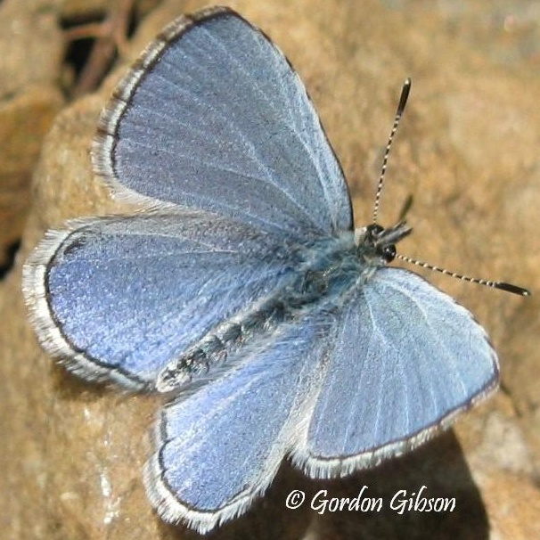

Celastrina echo
- Common name
- Echo Azure
- Family
- Lycaenidae
- Family common name
- Gossamer Wings
- On the wing
- L February to E October, peaks in April and again in August
Two or more generations
- Habitat
- Woodsy shrubby and riparian areas, especiall red-osier lined streams and mixed habitats with many flowering shrubs.
- Larval host:
- Red osier dogwood, elderberry, madrona, snowbrush ceanothus, huckleberries, bitterbrush and others.
- Nectar plants:
- Same plus frequent visitors of puddles, dung, and flowers including coltsfoot, blubell, hawkbit, goldfiels, stream violot, willow catkins and others.
- Abundance
- C-A
Range Map
Seasonality